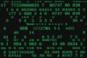
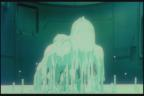
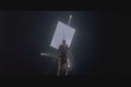

|
On these pages, you will see side-by-side comparisons
of both films. Ghost in the Shell screenshots are always displayed on the left hand side, while Matrix screenshots are on the right. The screenshots have been taken directly from the DVDs. For the purpose of this comparison, "Ghost in the Shell" will be referred simply as its acronym, "GitS".
Green seems to be kind of a theme w/ both of these movies. Here you
see the very first scenes of these movies.
From this green virtual effect, both will eventually fade out into
the next scene. Ghost in the Shell will fade into
a couple of police holicopters flying by in the night, while Matrix's will
fade into the flashlight carried by a cop.
Some obvious similarities here, each letter of the title appears one
by one in a techy/digital way.

Again, also obvious, are these greendigits all across the screen. While
GitS uses random numbers and letters that flash on and off during the beginning
credits, Matrix uses fictional(some seem to be Japanese) characters that
roll down the screen. Conspiracy rating: 7

This GitS scenes above represent a kind of birth; note the
fetal positions of the first 2 screenshots and the fact that it is in water. The
second set of pics show a dramatic levatation of Motoko(our cyborg heroine) as she ascends from the water, towards the laboratory lights. Now look below:

Again the first pic also symbolizes a birth, shown by the umbilical cord-like
wires running out of Neo and him being in a water/gel filled capsule which represents the womb. In the next two pics, we see Neo does show him getting lifting up from the water, which is somewhat
dramatic fashion as well onto a bright light. Conspiracy rating: 7
On to more Scene Comparisons |

{kind=link}
{kind=link}
{kind=link}
{kind=link}
{kind=link}
{kind=link}
{kind=link}
{kind=link}
{kind=link}
{kind=link}
{kind=link}
{kind=link}
{kind=link}